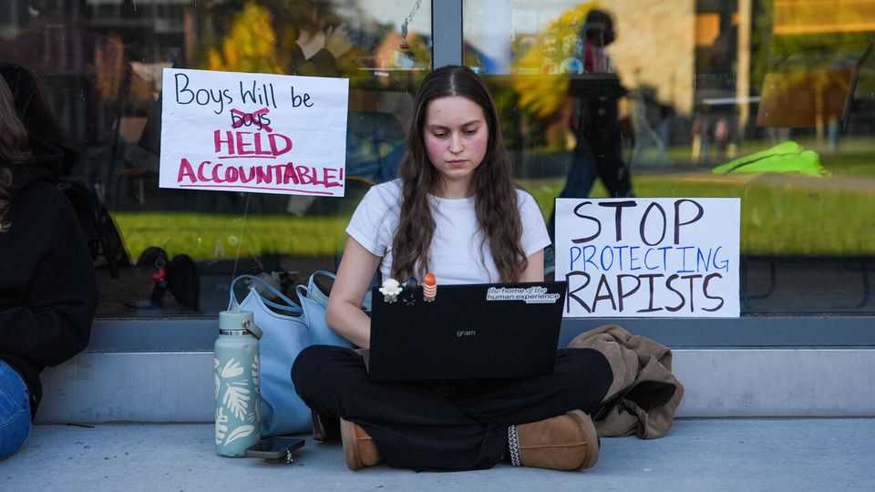
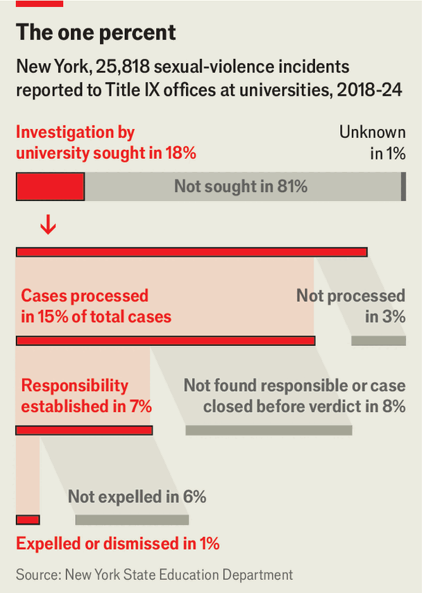

How not to make campuses safer
Shifting rules are failing students and universities alike

Oct 8th 2026
It is a bleak cycle. Every few years a report of sexual assault on campus captures national attention. The latest is at Cornell University, where a former student is accusing seven of her peers of raping her in 2024. Last month the woman filed a lawsuit against the men, their fraternity, Cornell and others, all of whom deny wrongdoing. Despite screenshots of their crude messages, just two of the students were expelled from the university. None was charged with a crime.
That has raised questions of whether investigations were botched by prosecutors (New York’s attorney-general is now looking into the case), by the university (Cornell has announced its own inquiry), or both. But as these investigations of investigations proceed, the Cornell case is the latest reminder of the contorted attempts to keep students safe, and how those efforts are letting them down.
Looming over this and other cases of campus assault is Title IX, a 54-year-old civil-rights law. If it seems odd that a law barring sexual discrimination should be used to investigate rape, that is because its application is relatively recent. In 2011, after high-profile reports of sexual assaults at universities and tepid action by police, then-President Barack Obama used Title IX to offer students protections that it seemed criminal justice could not.
The result has been a process that advances alongside any police investigation, with rules that are both looser and harsher than criminal ones. Title IX inquiries cannot compel witnesses to testify nor question them under oath; they also require merely a “preponderance” of evidence, rather than the obligation under criminal law that suspects be convicted only if their guilt is “beyond a reasonable doubt”. Universities have latitude to set their own punishments, as was evident in the Cornell case, where sanctions ranged from expulsion to writing essays.

Title IX’s rules, already difficult for university administrators to implement well, have been made more so by the dramatic changes from one presidential administration to the next. In his first term Donald Trump required universities to create their own quasi-judicial systems, with hearings, cross-examinations and more staff. Supporters say this added rigour; opponents claim the onerous process prompted accusers to drop allegations or never bring them (see chart). Federal oversight of universities’ inquiries also became more relaxed. Resolved investigations into sexual violence “fell off a cliff”, says Beth Gellman-Beer, a lawyer who spent years in the Education Department’s civil-rights office. Joe Biden sought to change the rules yet again, but Mr Trump reinstated his prior standard on September 28th and has cut the number of oversight staff.
With so many shifting rules and inevitably imperfect administration, it is unclear if Title IX has had any impact on reducing sexual assaults. There is little national research. Cornell does poll its students, though. Last year 35% of female undergraduates reported experiencing sexual assault during their time at university, up from 23% a decade earlier. Criminologists say one of the best ways to deter crime is to increase the certainty that perpetrators are caught. Fifteen years on, Title IX seems to be falling short at that. ■
Stay on top of American politics with The US in brief, our daily newsletter with fast analysis of the most important political news, and Checks and Balance, a weekly note that examines the state of American democracy and the issues that matter to voters.